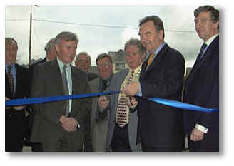
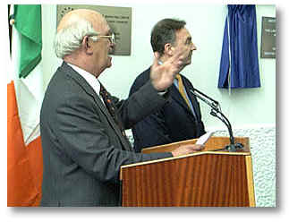
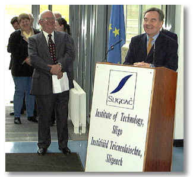
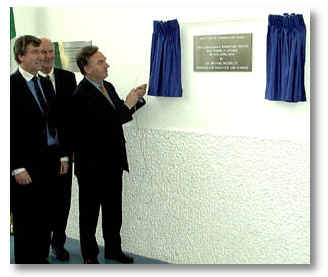
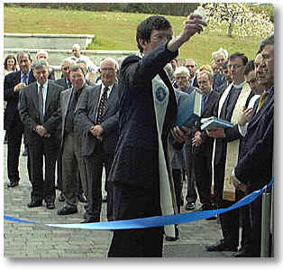
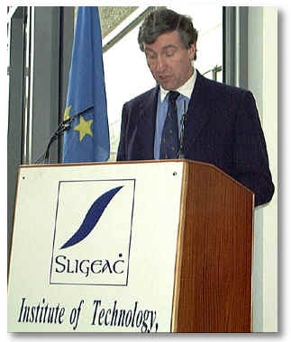

|
Speech
by the Minister for Education & Science, Dr. Michael Woods, T.D.,
at
the Official Opening of the New Languages & Marketing Building,
at
the Institute of Technology, Sligo
On
10th April, 2000 at 2.00 p.m.
|

Dr. Woods cutting the
ribbon, with Dermot Finan, Head of School, Business & Humanites on
left, Mayor of Sligo, Cllr. Roddy Quinn, centre and Cllr. Jimmy Devins on
right. |
Dr. Woods speaking at the
opening.
|
|

Director of the college, Dr.
Brendan Mac Conamhna addressing guests. |

|
|
Dr. Woods speaking with
guests. |

Unveiling the plaque
|
|

Fr. Declan Brady performs
the blessing. |

Cllr. Jimmy Devins, Chairman
of the College Governing body. |
|